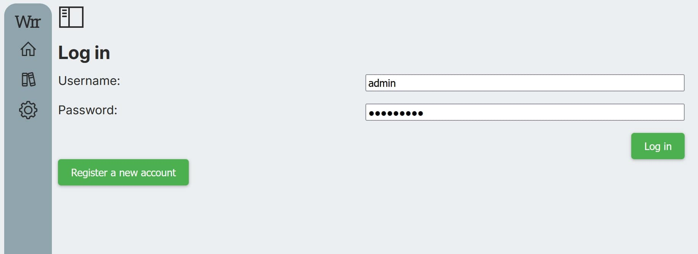
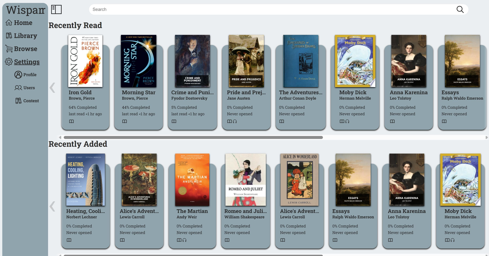
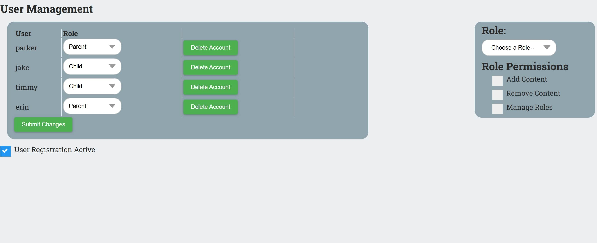
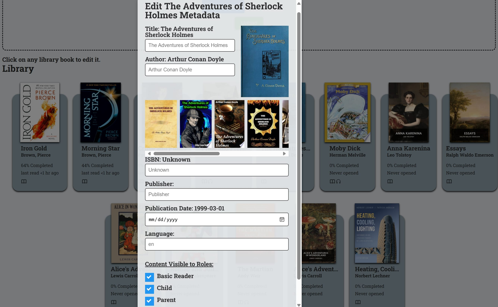
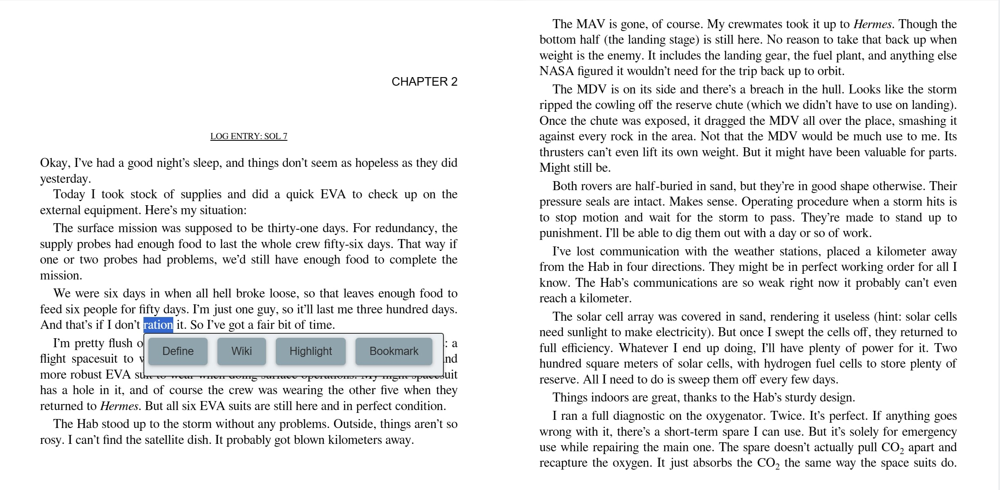
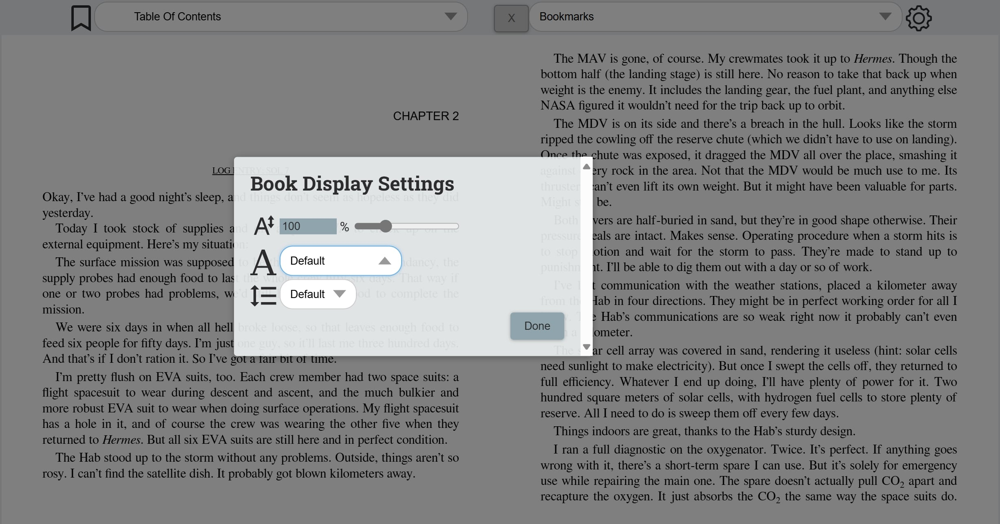
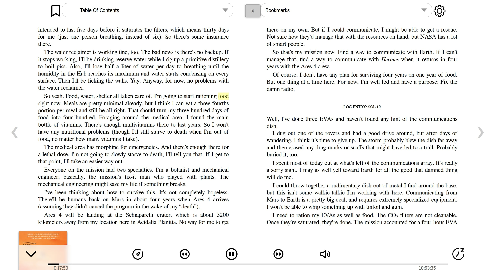

Wispar is meant to be run as a series of docker containers. As such, your system will require a certain amount of free resources, you will need a domain name, and will need a way to access your server from outside of your network. This page covers deployment steps, as well as many of the features included with Wispar.
In order to run Wispar, you will need to prepare your system in a few specific ways. First and foremost, you must clone or download the project onto your filesystem. You will also need to install Python, install Docker, own a Domain, and self host the instance.
The first thing you need to do in order to run Wispar is have Python installed, as well as any of the dependent packages in the deploy.py script. In no particular order, you will need dotenv, pathlib, getpass, re, string, secrets, subprocess, and os. Most of these should already be installed, but some may need to be installed using pip as well.
Wispar works as a series of Docker Containers on your machine, communicating in tandem to host, manage, and serve your books. Because of this, if you do not have Docker installed you will need to navigate to the Docker download page, and choose the download that's right for your system.
Thanks to the simple deployment script, deploy.py, the only thing you have to do once you've downloaded Docker is, in the root folder of the project, run the command python deploy.py. This will guide your through the process of creating a database password, an admin username/password, and configuring a few special settings. Once this is done, an .env file will be created, which will be used to configure your Wispar instance and get it up and running. This process may take some time, but at the end of it you should have three running containers.
This step can be modified depending on how tech savvy you are, but the following is the recommended way to have free access to your Wispar instance from outside your own network.
The first step is to have a domain name you own and have access to. This can be bought from a variety of places, like NameCheap, Domains.com, or Squarespace.
Once you have your domain, we recommend setting up a free Cloudflare account. From here, you will be able to set up your domain to point to your running instance of Wispar. First, you'll need to add a domain. You can find the steps to do so here. You can leave the records alone, but will need to also update the nameservers, which can be done with the registrar you bought the domain from.
Following this, we will be setting up a Cloudflare Zero Trust account. Zero Trust is a free and easy way to get access to your Wispar instance. The free tier has more than enough security features, tools, and active seats to make sure only authorized users gain access. We will be creating a Self Hosted Access Application, creating and connecting your Wispar instance to a tunnel, and eventually be able to access Wispar. The links above will help you get this configured.
NOTE: WISPAR, BY DEFAULT, RUNS ON PORT 1337, SO THE URL FOR YOUR TUNNEL MUST BE "localhost:1337". If you would like to change this, you will need to change the port used by Wispar in the Docker-Compose file. Just change the port number from '1337' to the specific port you would like to use. We also recommend to keep your access policies as strict as possible.
After this is done, and your Wispar instance is up and running on your machine, congratulations! You should be able to navigate to your domain, login through Cloudflare, and access Wispar!
When first logging into a Wispar instance, users will be greeted with a basic login page. Admin user(s) will be able to login using the username and password configured when running the deployment script. Other users with access to the instance will also be able to register new accounts.
Once a user has logged into the instance, they will be greeted with the basic Wispar homepage. This homepage displays important information about the books in the library, such as when they were last read, current progress, and the medium (textual or auditory) they were uploaded as. Books can be read by clicking on their specific card, after which they can be read or listened to.
Users will also be able to navigate to the other pages inside of Wispar by using the sidebar. Depending on the current permissions the user has, they will be able to view their library, browse for other books to download, view their profile, manage users on their instance, and upload/manage content.
From the 'Profile' screen, users will be able to change their theme, UI style, fonts, and homescreen. Users can also choose to override the default black & white theme used by the ebook reader, instead using their current theme.
Only users with the correct permissions will be able to access this page (Admin users have access to all settings). From this page, authorized users can manage other user's current role, delete users, or create new roles with specific permissions.
The admin user for the instance can also enable/disable registration, further locking down who does and doesn't have access.
From the content page, authorized users can upload content. The preferred content types are .epub and .m4b, but Wispar will automatically convert textual or auditory files to allow for wider compatability. If both the ebook and audiobook are uploaded for a book, Wispar will merge them into one 'card', where both mediums of the book can be accessed.
Users can also edit the metadata of their books by selecting it while on the content page. Once selected, user can change anything from the Title to the ISBN. The cover photo can also be changed by clicking on the current cover image. Books can also be restricted (by Admin users only), keeping them from being viewed by specific user groups.
Once ebooks and audiobooks have been uploaded, they can be read and/or listened to. When in the 'Library' or 'Home' pages, books can be accessed with by clicking on their title card.
The ebook reader comes with a number of features. By selecting a section of text, users can choose to highlight, bookmark, define, or lookup a word/phrase on Wikipedia. Users can also select the cog in the upper right corner to configure their ebook reader, selecting their preferred font, font size, and line-spacing.
To access their highlights or bookmarks, users can select the dropdown in the upper right-hand corner. This will display any highlights or bookmarks they've created. Users can also access the table of contents at any time by selecting the dropdown in the upper left-hand corner. Selecting a chapter will jump you to that position in the book.
 For books that are audio only/have both the ebook and audiobook uploaded, an audio player will be usable on the bottom of the screen. Using the audiobook player users can jump to a specific location in the book, modify playback speed, fast-forward, rewind, set a sleep timer, and adjust volume.
If both the ebook and audiobook have been uploaded for a specific title, readers can use a feature known as forced alignment to sync the textual and auditory progress of their book, in real time. When this occurs, playing the audiobook will cause the currently-spoken word to be highlighted on the ebook. This is an extremely helpful feature when consuming hard to read books, books in foreign languauges, or in any other circumstance where you want to read while you listen!
